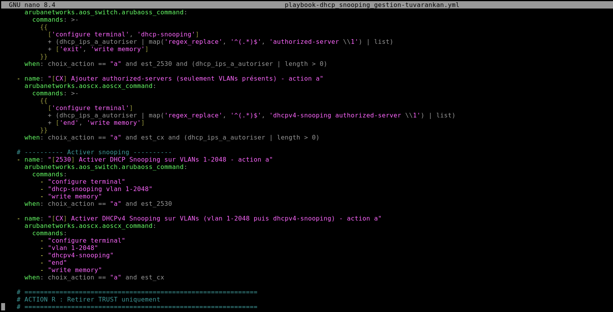
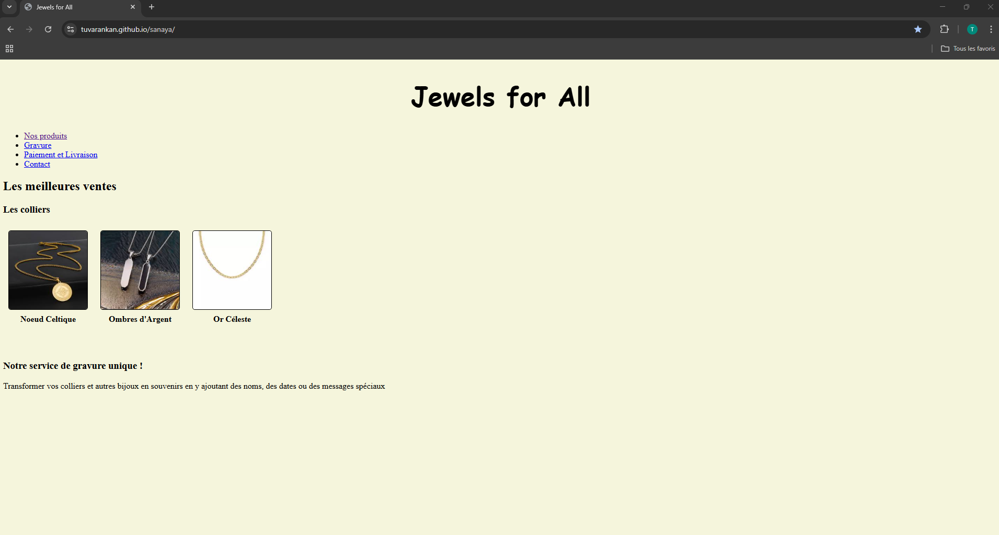

Étudiant en Systèmes, Réseaux & Cybersécurité
Actuellement étudiant en deuxième année de BTS Services Informatiques aux Organisations, option SISR (Solutions d’Infrastructure, Systèmes et Réseaux).
Je m’intéresse particulièrement à l’administration des systèmes et réseaux, à la cybersécurité ainsi qu’à l’automatisation des infrastructures informatiques.
Actuellement en deuxième année de BTS SIO option SISR, je me forme à l’administration des infrastructures informatiques, aux réseaux et à la cybersécurité.
Au cours de ma formation, j’ai acquis des compétences techniques en administration des systèmes, configuration réseau, virtualisation, gestion des incidents et sécurisation des infrastructures informatiques.
Mes stages m’ont permis de découvrir le fonctionnement d’un environnement professionnel et de participer à différentes missions liées à l’assistance utilisateurs, à l’analyse d’infrastructures réseau et à l’automatisation de configurations avec Ansible.
Mon objectif est de poursuivre dans le domaine de l’administration systèmes et réseaux ainsi que dans la sécurisation des infrastructures informatiques.

Dans le cadre de mon stage de deuxième année à la Mairie de Taverny, j’ai participé à l’automatisation de la configuration de switchs réseau à l’aide d’Ansible. L’objectif était de faciliter l’administration du réseau en créant des playbooks permettant d’exécuter automatiquement certaines configurations sur les équipements. Pour cela, je me suis appuyé sur la topologie du réseau afin de recenser les différents switchs présents dans l’infrastructure . Afin d’organiser les différentes étapes du projet (découverte de l’environnement, création des playbooks, tests et validation), un diagramme de Gantt a également été réalisé.
Voir le diagramme de Gantt
Dans le cadre d’un TP réalisé en première année de BTS SIO, j’ai développé un site web pour une entreprise fictive appelée Sanaya, spécialisée dans la vente de produits. L’objectif était de concevoir un site comprenant plusieurs pages (accueil, produits, catégories et fiche produit) en respectant un cahier des charges. Pour cela, j’ai créé différentes pages HTML reliées entre elles, intégré des images, une fiche descriptive du produit, une galerie d’images, un tableau comparatif et une section d’avis utilisateurs. Ce projet m’a permis de découvrir les bases du développement web et la structuration d’un site internet.
Lien pour visiter la page